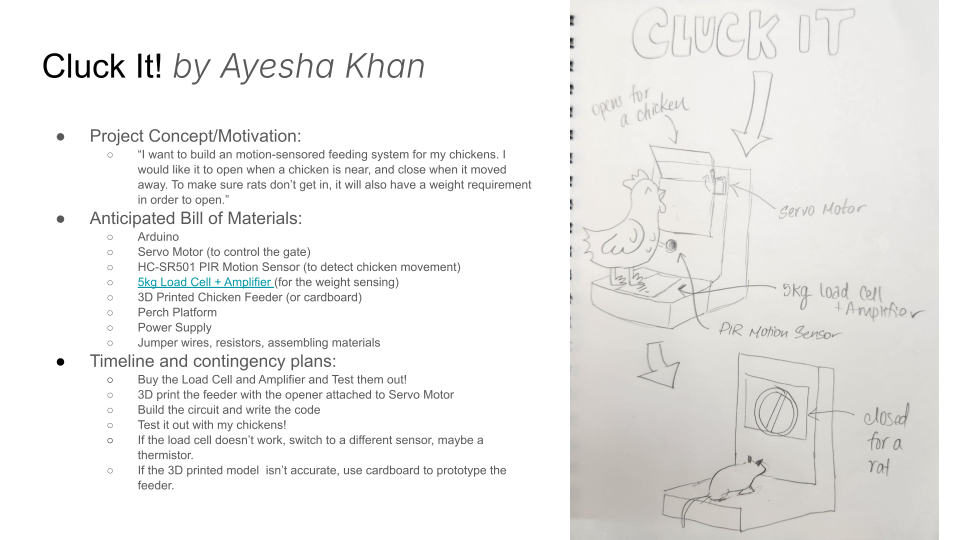
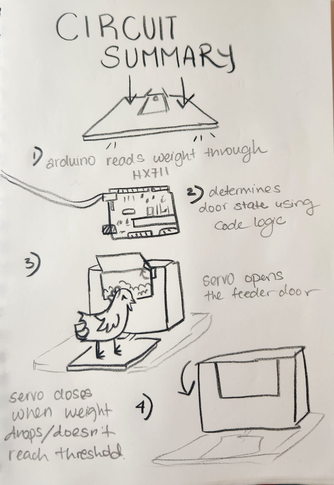
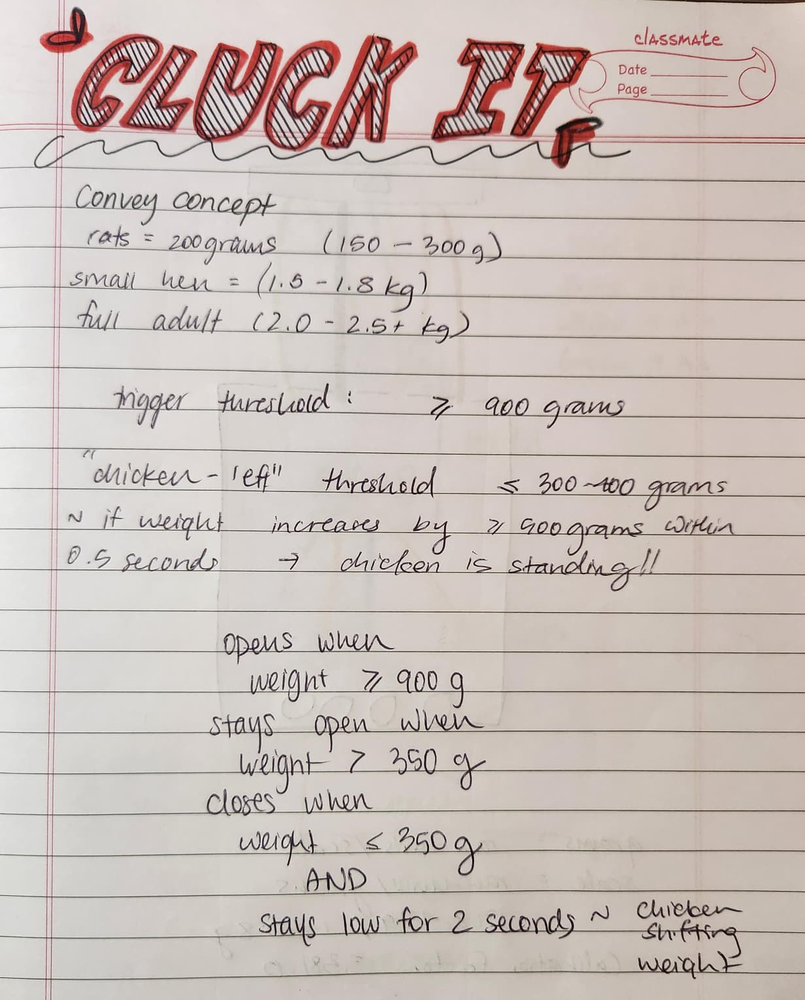
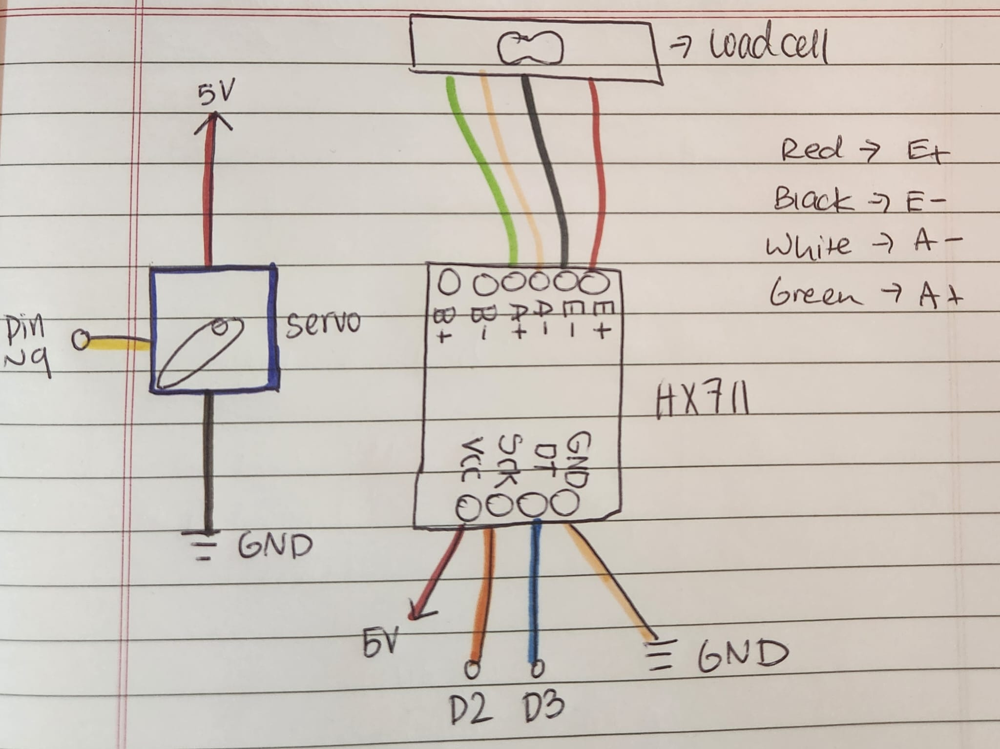
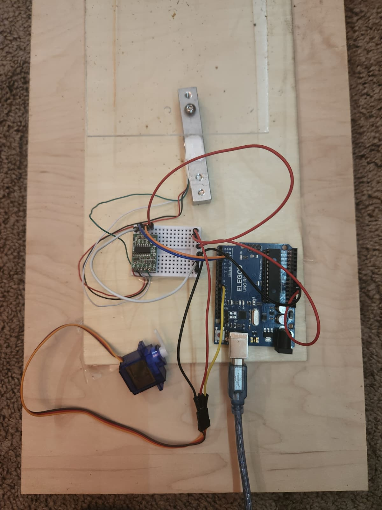

I wanted to build a weight-based feeding system for my chickens. The current problem is that their feeder opens for both rats and chickens when stepped on. I would like it to only when a chicken steps on it and close when it moves away. To do this, I incorporated a weight requirement activated and measure with a load cell and amplifier. The feeder is opened and closed with a servo motor. The microcontroller used is an Arduino Uno. The load cell is calibrated to only open the feeder when a weight of at least 900 grams is detected, which is way greater than the average weight of a rat but less that that of an average adult hen. Here was my initial concept: 
Next, I started experimenting with my load and motion sensor. I realized after a bit that I was overcomplicating things. I decided to only keep the weight sensor that would handle the opening and closing of the door based on weight measurement and logic. This was the logic I was trying to aim:
In order to determine the threshold and trigger weight of the sensor. I did research on chickens and rats. An average rat weight 150-300g, a small hen weighs 1.5-1.8kg, and a large hen weights 2.0-2.5kg. I decided to set my threshold at 900 grams to ensure that the feeder would only open for the chickens and not the rats. One thing I wanted to make sure is that the feeder would open if another chicken hopped on while one was already there. To account for this, I added logic that keeps the feeder open as long as the weight stays above the minimum “presence” threshold (350g). I also added a 2 second puase before closing the door, which prevents the feeder from shutting if a chicken moves a little its weight or steps off and on, or if a second chicken hops on. Here's my notes when figuring all this out:
Here is the picture of my schematic. I color coded the lines to help me keep track of the jumper wires that I used in my actual circuit.
Here is my circuit before assembling the pieces together. I had laser cut the acrylic plate and screwed the load cell into it using nails. Then I attached the other side of the load cell to the base plate made up of two pieces of wood (one stronger noe underneath for more sturdyness and one on top to screw the load cell into). Finally, I connected the rest of the components on a breadboard and wired everything together as shown in the picture below
To calibrate the load cell, I first uploaded a calibration sketch that allowed me to read the raw output values from the HX711 amplifier. With no weight one the plate, I tared the number to set the zero point. Then, I placed a 3lb dumbbell (1360.8 grams) onto the plate and recorded the raw averaged readings. The sensor consistently reported values around 518,000 units. To calculate the calibration factor, I divided the average reading by the mass: calibrationFactor = 518,479 / 1360.8 ≈ 381.0 After applying this calibration factor, I refined the facor again by measureing the 3lb dumbbell again. The sensor reported 1395 grams, so I adjusted the factor to 390.5. With this updated value, the load cell output stabilized really close to the true weight (1361 grams). Now my weight sensor was callibrated!
//This is my the code for my final project: CluckIt! for HCDE 439: Physical Computing
//This feeder is opening only for chickens, and is dependent on weight to keep the rats out!
//References:
//https://forum.arduino.cc/t/how-do-i-use-hx711-and-a-load-cell/1251675/5
//https://randomnerdtutorials.com/arduino-load-cell-hx711/
//Ayesha Khan, 12/07/2025
#include "HX711.h"
#include
//defining pins
#define hx_dout 3 //HX711 DOUT goes to pin 3 on arduino
#define hx_sck 2 //HX711 SCK goes to pin 2
#define servo_pin 9 //servo pin goes to pin 9
//defining the scale and the door objects
HX711 scale;
Servo door;
const float calb_factor = 390.5; //callibration factor from trial runs (in grams)
//setting threshold
float openThreshold = 900.0; //the feeder door opens when weight >= 900 grams
float closeThreshold = 350.0; //the feeder door can close when weight <= 350 grams
//confirms chickens is gone
const unsigned long close_delay_ms = 2000; //storing the 2 second wait time in a constant and positive variable (in milliseconds)
bool doorOpen = false; //starting the door open state at false
unsigned long chickenGoneTime = 0; //starting the chicken gone time at 0
//servo motor angles
const int door_closed_ang = 0;//this is the angle of the servo when the door is fully closed
const int door_open_ang = 180;//this is the angle of the servo when the door is open
// -------------------- HELPER FUNCTIONS --------
void openDoor() {
door.write(door_open_ang);
}
void closeDoor() {
door.write(door_closed_ang);
}
//storing the average of 20 samples of the weight reading through this function
float getAverageWeight() {
float w = scale.get_units(20); //reading 20 samples
//creating room for error in the reading to reduce electrical noise
if (w > -30 && w <= 30) { //if measurement is within -30g and +30 g, then treating the weight as 0 grams.
w = 0;
}
return w;
}
void setup() {
Serial.begin(9600); //using the baud reading
Serial.println("CluckIt! Starting..."); //for serial printer
//setting the scale
scale.begin(hx_dout, hx_sck); //setting input pins
scale.set_scale(calb_factor); //setting with the callibration factor
Serial.println("Taring. Make sure the scale is EMPTY!");
delay(2000);//delay after just powering the scale
scale.tare();//making sure the current weight is taken as 0.
Serial.println("Tare complete."); //for serial printer
//setting the servo motor
door.attach(servo_pin);
closeDoor();//start with door closed and angle at 0 degrees
doorOpen = false;
}
void loop() {
float weight = getAverageWeight(); //receive the average of the 20 readings, or 0 if no weight
Serial.print("Weight (g): ");
Serial.println(weight); //printing the current weight
//if chicken steps on the scale:
if (!doorOpen && weight >= openThreshold) { //if the door is closed and the weight is greater than the open threshold
openDoor();
doorOpen = true; //make the door open
chickenGoneTime = 0; //reset the close timer
Serial.println("Door OPEN (chicken detected)"); //for serial printer
}
//if chicken steps off the scale
if (doorOpen && weight <= closeThreshold) { //if the door is open while the weight goes underneath the close threshold
if (chickenGoneTime == 0) { //starting the timer and measuring time passed in milliseconds
chickenGoneTime = millis();
}
if (millis() - chickenGoneTime >= close_delay_ms) { //if the time passed matches or passes the 2 seconds, then close the door
closeDoor();
doorOpen = false; // close the door
chickenGoneTime = 0; //reset the close timer
Serial.println("Door CLOSED (chicken gone)"); //for serial printer
}
}
else if (weight > closeThreshold) { //if none of above apply, then the chicken is still present
chickenGoneTime = 0; //resetting the timer so it doesn't close after 2 seconds
}
delay(100); //pause for stability
}
Here are a few images of the assembly of the prototype. I used two upside down bows as the stand for the feeder to give structure and height. The load cell is screwed into the top acrylic plate, which is attached to the wooden base. The servo motor is attached to the side of the feeder box and connected to a lever that opens and closes the door. The breadboard and Arduino are placed on the base plate as well. The arduino is powered by a 5V powerbank.
My chickens were chickening out of testing the feeder, so on the left is the demo video with me using my foot as a chicken substitute! If I gave my chickens a week to get used to the sound and learn that food comes from the feeder, I believe they would use it!
To the right is an attempt with one of my chickens. She got scared of the sound of the servo motor! Such a chicken :)!